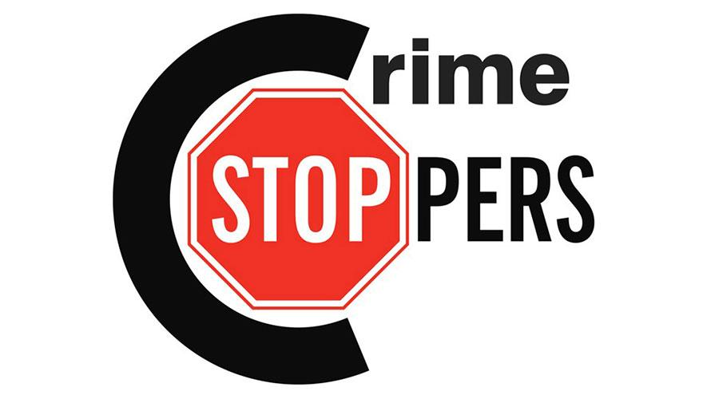
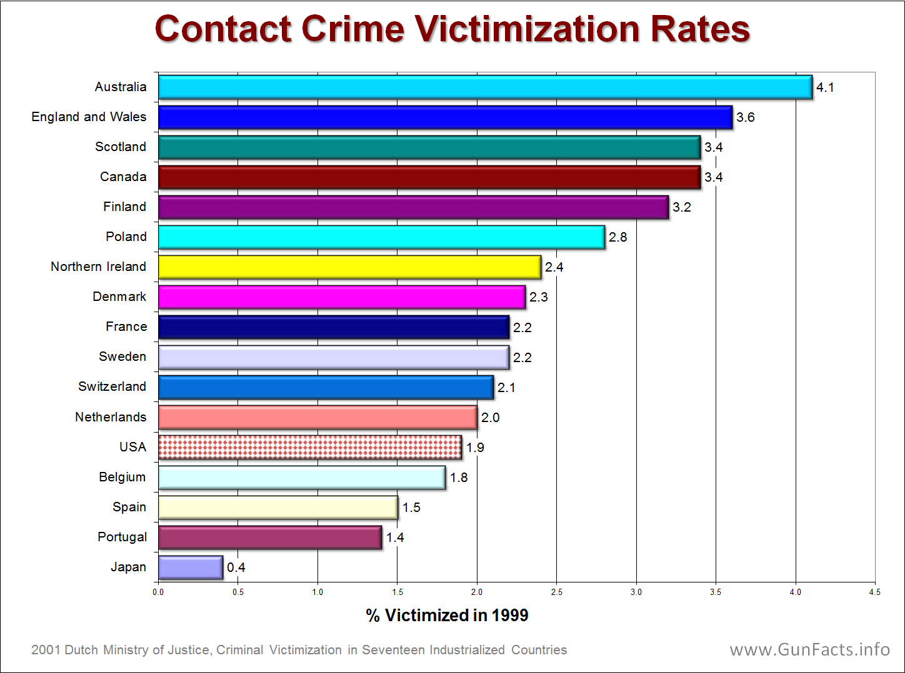

HOME
SERVICES
MISSION
ABOUT
CONTACT
LOGIN
Our Mission and Objectives
The Partnership for a Safer Cleveland is the area’s go-to resource for bringing best practices to the violence prevention process, guiding partners, and evaluating plans and programs. Political silos can bog down the process. The Partnership’s neutral position makes it an unparalleled means for quickly identifying the real crime and violence issues, finding the community service gaps which allow them to exist, and fast-tracking collaborative
solutions before it’s too late. Through its unique vantage point, the Partnership helps government agencies identify work being done in the community that duplicates their own efforts. This gives local officials the ability to devote their attention to other priorities in need of addressing.
Mission Statement:
"To convene public and private stakeholders to reduce
crime and violence through evidence-based policies and
collaborative prevention and intervention practices."
Our Vision:
"To evolve Cleveland’s justice-focused system into a
violence- and crime prevention-focused system."
We Are....
• A critical connection between community
service providers and Cleveland’s justice
system
• A go-to source for best practices on the
violence prevention process
• A nonprofit, politically independent source
for greater Cleveland crime statistics and
trends
• A trusted, objective resource for local and
national media
• An effective local link to national programs
for violence prevention.
The Partnership's primary objectives are to:
Promote ongoing dialogue on criminal justice policy among diverse city and state groups
Promote youth opportunities and involvement in decision-making around youth facilities
Facilitate information exchange on a wide-range of issues related to the criminal justice field, focusing on crime deterrence and youth violence prevention
Encourage scholarly research in youth development and violence prevention and promote practical applications for the findings
Identify advocates and lobby for needed changes and resources in the criminal justice system and other systems that are affected or influenced by the criminal justice system
Organize and participate in symposia, seminars or other events
Educate outreach workers and community leaders in the best-practices approach in violence prevention and building healthy, safe communities
